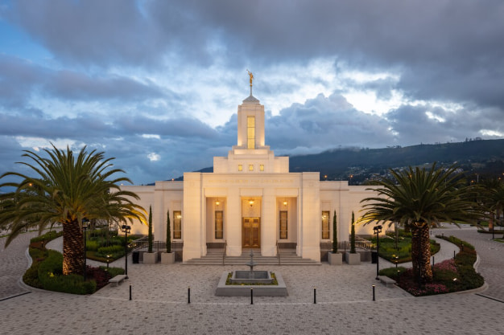
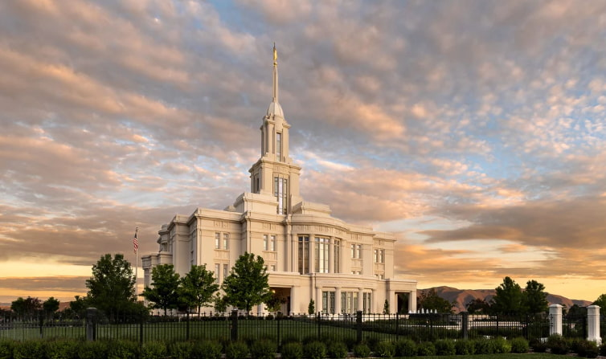
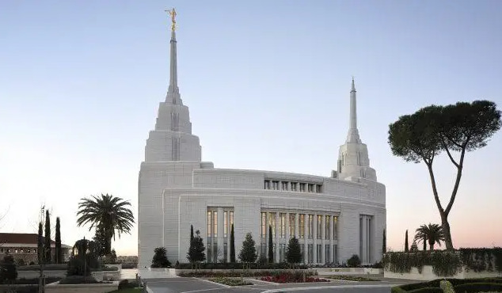

Temples Around the World
Salt Lake Temple
Provo City Center Temple

Quito Ecuador Temple

Payson Utah Temple

Rome Italy Temple
Bogotá Colombia Temple
Tokyo Japan Temple
Manti Utah Temple
Guatemala City Guatemala Temple